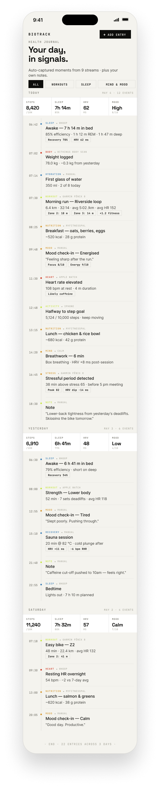
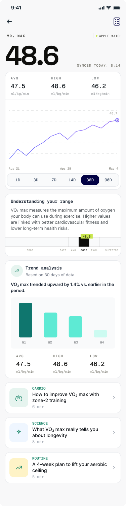
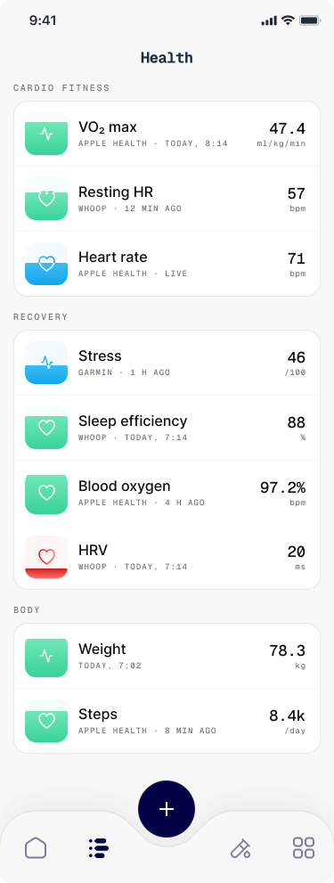
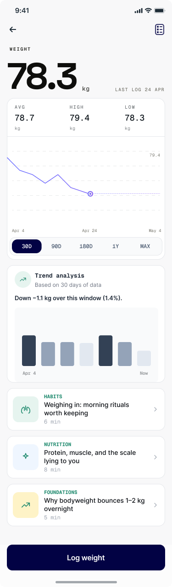

Your body's data,
finally in one place.
The BiotrackOS app gives people a single, sense-making view of every signal — pulled automatically from the watches, rings, and scales they already own. No chart-staring. No re-entry. No app-graveyard.
Auto-captured.
Always quiet.



Every signal,
one screen.
Step counts from iPhone, VO₂ from Apple Watch, recovery from Whoop, sleep from Oura, weight from Withings — all merged into one canonical record. The app does the reconciliation; you just see your day.
- 22 wearable & app sources supported on day one
- Automatic dedupe across devices
- Manual entry for what your devices miss
- Offline-first — your record lives on your phone

The journal, written
for you, by your body.
A continuous, human-readable log of everything that happened today — runs, naps, mood check-ins, meals — pulled from the apps you already use. Add notes when you want. Skip them when you don't.
- Chronological day view across all sources
- Note-taking with mood & symptom tagging
- Streams: Workouts · Sleep · Mind & Mood · Nutrition
- Searchable across years
Trends, explained
like a friend would.
Charts are a feature, not the answer. BiotrackOS reads the same data your clinician does and writes a one-line summary in plain English — with a why, not just a what.
- "VO₂ trending up 1.4%" — with the period & range
- Body-aware framing (poor → fair → good → superior)
- Linked articles for context, not clickbait
- Weekly digest, never daily noise
Share with your
clinic. Revoke any time.
If your clinic, coach, or insurer is on BiotrackOS, one tap links your account. Granular consents let you share VO₂ but not weight, sleep but not mood — and pull the cord whenever you want.
- Granular per-metric, per-recipient consent
- Time-bounded shares (e.g. "next 90 days")
- Audit log of every read
- One-tap revoke from your phone
